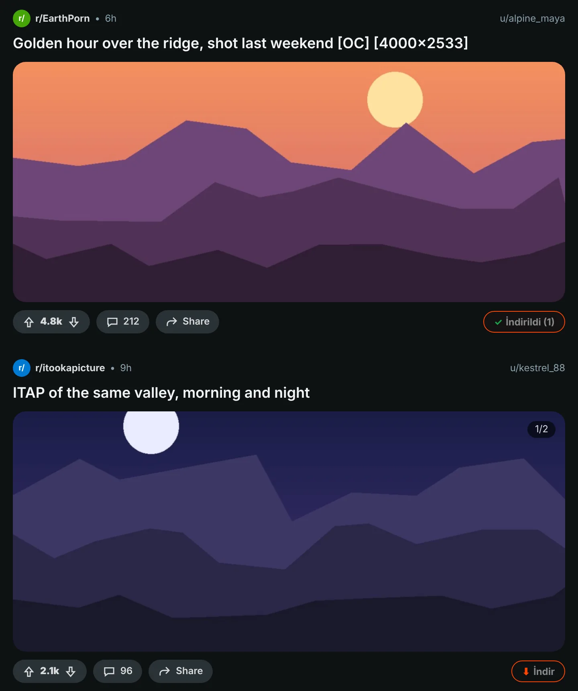
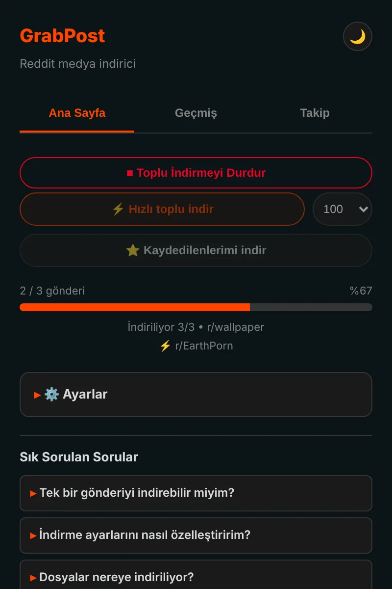
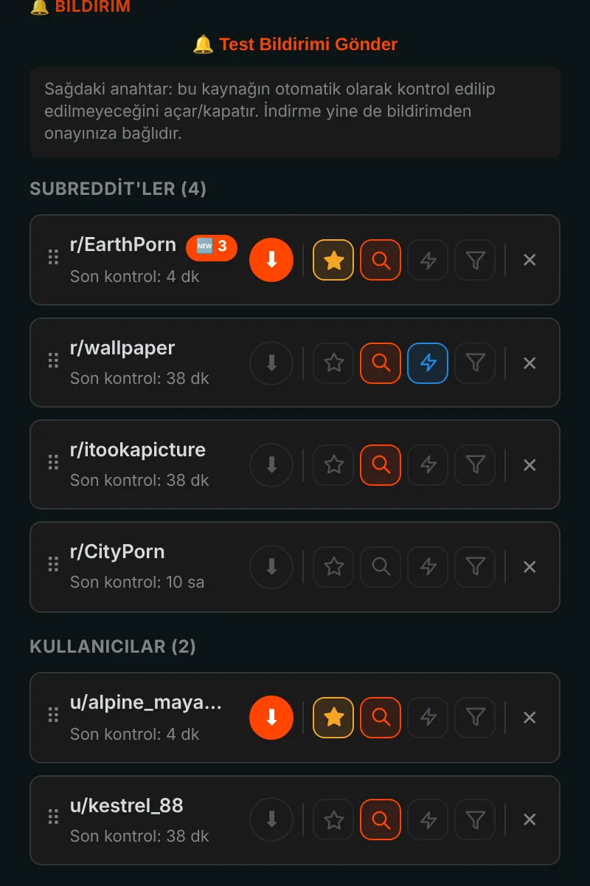
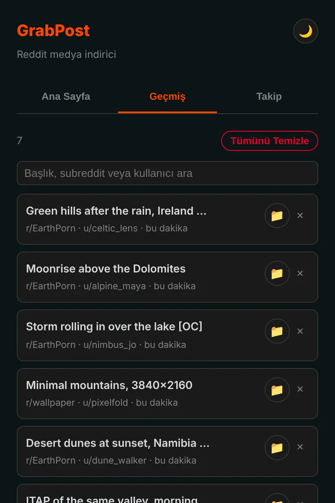

Reddit'teki her şeyi tek tıkla kaydedin.
GrabPost her Reddit gönderisine bir İndir düğmesi ekler. Videolar sesiyle iner, galeriler eksiksiz gelir, siz başka işle uğraşırken koca subreddit'ler ve profiller iner. Ücretsiz, takip yok.
Henüz mağazalarda değil. GitHub'dan kurulum yaklaşık bir dakika sürer.

Gönderideki düğmeye basın.
Her gönderide bir düğme
Turuncu düğme her gönderinin oy ve paylaş satırında durur: akışta, profillerde, arama sonuçlarında, yeni ve eski Reddit'te. Görseller, galeriler, GIF'ler, Redgifs ve Imgur bağlantıları çalışır. Alt+Shift+D ekranın ortasındaki gönderiyi indirir.

Koca sayfalar toplu halde
Hızlı mod bir subreddit'i, profili, multireddit'i ya da aramayı doğrudan Reddit'in verisinden okur, sayfayı kaydırmanız gerekmez. Elinizde olanları atlar, daha önce indirdiğiniz gönderilere gelince durur. Kaydettiğiniz gönderiler de aynı şekilde iner.

Takip edin, yeni gönderiler size gelsin
Subreddit ve kullanıcıları takip edin, yeni medya gelince bildirim alın ya da kendiliğinden insin. Medya türüne, NSFW'ye veya anahtar kelimeye göre süzün. En fazla 10 favori 5 dakikada bir kontrol edilebilir.

Her indirme kayıtlı
Geçmiş, kaydettiklerinizi arama kutusuyla listeler; elinizdeki gönderiler Reddit'te işaretlenir. Yedekler kendiliğinden alınır, yeniden kurulum listenizi silmez.

Ayrıntılar düşünüldü
Sesli videolar
Reddit sesi ayrı bir dosyada tutar. GrabPost onu bulup videoyla birleştirir, hem de tarayıcınızın içinde.
Klasör ve dosya adları sizin
Klasörler için {subreddit}/{user}, dosyalar için {date}_{title} gibi şablonlar.
Kopya yok
Biri aynı resmi başka bir subreddit'e yeniden yüklese bile tanır.
IDM ile yan yana çalışır
İndirme yöneticileri dosyayı kapıp klasör adlarınızı çöpe atamaz.
Reddit'e karşı sabırlı
Reddit mola isterse GrabPost tam istenen süre kadar bekler ve devam eder.
15 dil
Eklenti de bu sayfa da sizin dilinizi konuşur.
Ne indirdiğiniz sizi ilgilendirir
- Analiz yok, takip yok, hesap yok
- Sadece Reddit ve medyasını barındıran sitelerle konuşur
- Geçmişiniz ve ayarlarınız tarayıcınızda kalır
- GitHub'da açık kaynak
Bir dakikada kurun
GrabPost henüz Chrome Web Mağazası'nda değil, bu yüzden elle kuruluyor. Chrome, Edge, Brave, Opera ve diğer Chromium tarayıcılarda çalışır.
- GitHub'dan en son grabpost-v…zip dosyasını indirin ve kalıcı olarak tutacağınız bir klasöre açın.
chrome://extensionssayfasını açın ve sağ üstteki Geliştirici modunu açın.- Paketlenmemiş öğe yükle'ye tıklayın ve açtığınız grabpost klasörünü seçin.
- Reddit'i açın. Turuncu düğme gönderilerde belirir, araç çubuğu simgesi GrabPost panelini açar.
Güncellemek için aynı klasördeki dosyaları değiştirin ve GrabPost kartındaki yenile düğmesine basın. Ayarlarınız ve geçmişiniz kalır.
Firefox: Eklenti mağazası sürümü yolda. O zamana kadar Firefox zip'i about:debugging üzerinden geçici olarak yüklenebilir.
Sorular
GrabPost ücretsiz mi?
Evet, her özellik ücretsiz. Size zaman kazandırıyorsa geliştiriciye bir kahve ısmarlayabilirsiniz.
Dosyalar nereye iniyor?
Tarayıcınızın indirme klasörüne, seçtiğiniz bir alt klasörün içine. Varsayılanı Reddit Downloads; dosya adları subreddit adıyla başlar.
Reddit'e giriş yapmam gerekiyor mu?
Sadece kaydettiğiniz gönderiler ve yaş kısıtlamalı topluluklar için. Geri kalan her şey hesapsız çalışır.
Yeniden kurarsam geçmişim gider mi?
Hayır. Tarayıcı senkronizasyonu açıksa ayarlar ve takip listesi kendiliğinden geri gelir. Ayrıca otomatik bir yedek dosyası tutulur ve GrabPost geçmişini tarayıcının indirme listesinden yeniden kurabilir.
Edge, Brave veya Opera'da çalışır mı?
Evet. Paketlenmemiş eklenti yükleyebilen her Chromium tarayıcısı Chrome zip'iyle çalışır.
GrabPost'u indirin
Henüz mağazalarda değil. GitHub'dan kurulum yaklaşık bir dakika sürer.